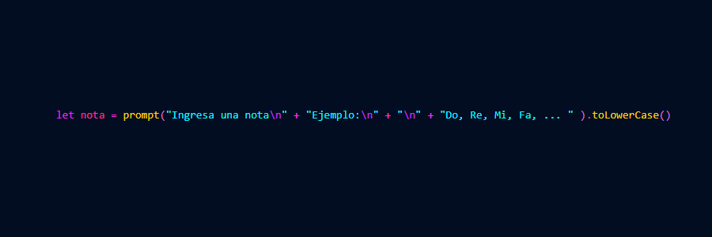
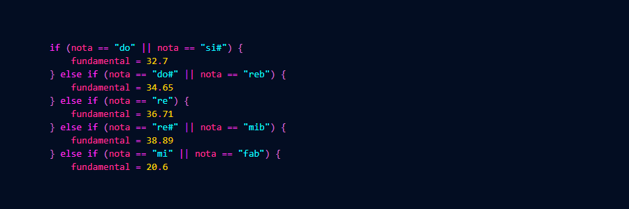
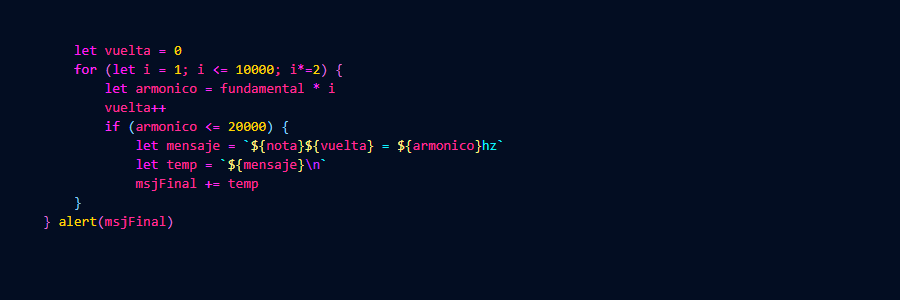

Desafío Complementario Nr1
Este desafío muestra, a través de un loop "for", todas las frecuencias correspondientes a la octava de una nota musical.
Primero, el navegador te pedira que ingreses una nota. Esta misma puede ser cualquiera de la escala musial occidental tradicional. Es decir: Do, Re, Mi, Sol#, Mib, etc; como también con cifrado américano. Por ejemplo: Ab, C#, D, etc. En caso de no corresponderse a una nota seremos alertados y podremos volver a intentarlo.
Una vez ingresada la nota, se le asignará un valor inicial llamado Fundamental. Este mismo representa el menor valor posible, expresado en hercios (Hz), capaz de ser percibido por el oído humano para esa nota en particular.
Con este dato ingresado ya somos capaces de calcular las frecuencias correspondientes a las próximas octavas. Esto lo haremos multiplicando por 2 cada resultado obtenido del loop predecesor.
Una vez finalizado, recibiremos una alerta con todos nuestros resultados, siendo estos siempre menores a 20,000hz (Frecuencia más aguda percibida por el oído humano).